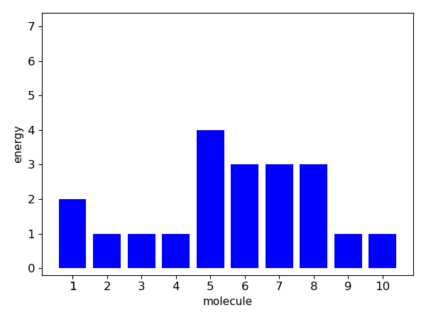
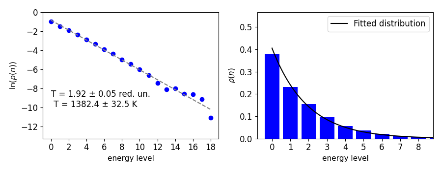

Extra functions
-
class
simbo_class.extra_functions(en, nop, nu)¶
-
__init__(en, nop, nu)¶ Constructor (inherits from run_simbo class)
-
find_skips(maximum)¶ Finds spacing for optimal axis labels. (Could have been inherited from run_simbo, but it didn’t work for some reason).
-
get_w_sw(en, nop, units)¶ Allows user to play around with W and S_w for Task 6. Input is an average energy per particle (reduced units) and the number of particles. These are not attributes of run_simbo (!!). It then generates levels for these parameters in the same way as generate_levels(), calculates the distribution over the energy levels, the statistical weight and the Boltzmann entropy. The output is a plot of the levels per molecule (see example below) and the value of the statistical weight and the Boltzmann entropy.

-
plot_eq(all_wbolt, all_sw)¶ Plots equilibration data generated by run_eq (statistical weight and Boltzmann entropy in kJ/mol K).
- Parameters
- all_wboltnp.array, shape=[nstot], dtype=int
Stored data for statistical weight from equilibration run.
- all_swnp.array, shape=[nstot], dtype=float
Stored data for Boltzmann entropy from equilibration run
-
plot_prob_temp(dist_sum, max_level)¶ Calculates probability distribution from average distribution over levels (dist_sum). Since dist_sum gives the instantaneous average number of particles in each level, the instantaneous probability for a certain level, can be calculated by simply dividing by the total number of molecules. Because the logarithm of the probability ln p(r) is proportional to the temperature as $$ \ln {p(r) \sim -\frac{E}{T}} $$ (reduced units) in the Boltzmann distribution, we can do a least square fit to get the temperature, as the slope of a fit to ln p(r) against E will be equal to -1/T. In our case E will be the energy of a certain level and p(r) the probablility for this levels as calculated from dist_sum. The standard error of the temperature is calculated from the square residual of the least-square regression r using Bessel's correction $$ {s = \frac{1}{\sqrt{N-1}}\sqrt{r}}. $$ Two graphs are plotted (see example below), one with ln p(r) as a function of the level n and the linear regression line and results of the temperature calculation. The other graph plots the probability distribution over the levels and fits the Boltzmann distribution $$ {p (r) = \frac{\exp\{{-n/T}\}}{q}} $$ where $$ {q = \sum \exp{\{-n/T\}}} $$ to the plotted distribution. The temperature used in the distribution is the calculated one from the regression.

-
print_w_sw(all_wbolt, all_sw, start, end, units)¶ Prints W and S_w for selected interval and units. (Not used in tasks)